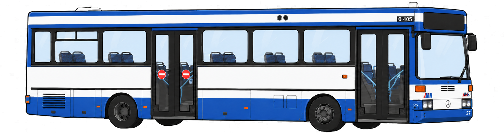

～ ドイツ製路線バス資料館 ～
|
メーカー
BANNER
WEB RING
|
ようこそ Linienbusarchiv.de へ！
このページでは、ドイツおよび近隣諸国の路線バスをメーカー・形式・年代・事業者別に紹介しています。古いStandard-Busからノンステップバスまで、写真・仕様・特徴を少しずつ記録していく個人サイトです。 ★ 新着記事 ★
→ 過去の記事一覧 ★ Standard-Bus 特集 ★1960年代末からドイツ各地に広がったStandard-Busを中心に、 SL I、StÜLB、SL II、Ü 80などの系列を紹介します。
★ 車両資料室 ★
★ 更新履歴 ★2026.07.21 レトロ版トップページを公開しました。
2026.07.21 Linienbusarchiv.de を開設しました。
2026.07.21 車両資料室の分類を作成しました。
2026.07.21 アクセスカウンターは現在仮表示です。
★ このサイトについて ★当サイトは、ドイツの路線バスに関する情報を日本語で記録する非公式の個人サイトです。 掲載内容は管理人が収集・整理した資料に基づきます。メーカーや交通事業者とは関係ありません。
STANDARD ★ おすすめリンク ★
★ ご意見・情報提供 ★
誤記のご指摘、車両情報、写真提供についてはメールでお願いいたします。
info@linienbusarchiv.de ※迷惑メール対策のため、件名に「Linienbusarchiv」とご記入ください。 |